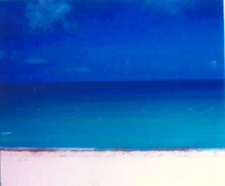

Vacation-Kids-Jesus-Beauty
Items Needed
Passport, ID, Credit cards, money, medicines, clothes, and the casual stuff.
Special Items Needed
Bible, Daily Bread Scriptures, Holy oil and of course, The Love Express Newspapers. I keep these special items close to me in a special bag. “Take with you words and turn to the Lord”. Hosea 14:2

My Vacations
On Cruise ships they always have interdenominational services on Sunday mornings. I always enjoy these services and met Pastors and their families who sometimes knew about the Love Express.
At Resorts they always have a Gideon Bible or a Spanish Bible in the End table draws.
One thing I always do in my rooms or cabins is pour some anointed oil in my hands. I then rub my hands on the door knobs, pillows and sheets, towels usually everything I am going to touch. Praying over all the stuff and even shaking hands with the workers. “I shall be anointed with fresh oil” Psalms 92:10.
What do you bring on vacation!!
Also, praying over my airplane, the pilots, and attendants. Thanking God for good weather and being upgraded to First class “Hallalujah”
Rose Acker Lictro holding my Bible, a Love Express, Daily Bread Scriptures and Holy oil on my vacation.
Questions Kids ask Nanny Rose;
“Did Jesus Go on Vacation”
Kids: Did Jesus hang out with family and Kids?
Nanny: Jesus and the Little Children. Mark 9-10
K: Did Jesus love rivers and birds?
N: The Baptism of Jesus. John 1; Matt 3
K: Did Jesus go hiking?
N: The Temptation of Jesus. Matt 4; Mark 1; Luke 4
K: Did Jesus go to weddings, water and wine on the beach?
N: Jesus changes water into Wine. John 2
K: Did Jesus ever get tired and thirsty from walking in sandals?
N: Jesus and the Samaritan Woman. John 4
K: Did Jesus walk by the sea and go fishing?
N: The Disciples follow Jesus. Matt 4; Luke 5
K: Did Jesus get scared of storms?
N: Jesus calms a storm. Mark 4
K: Did Jesus go to spa’s for ointments?
N: Jesus is anointed. Luke 7
K: Did Jesus go water skiing?
N: Jesus walks on water. Matt 14
K: Did Jesus love animals?
N: The Good Shepherd. John 10; Psalm 23
K: Did Jesus ride a donkey and like Palms branches?
N: The Triumphal Entry. Matt 21
K: Did Jesus have meals and talks with his friends?
N: The Lords Supper. Luke 21-22.
People say that “Beauty is in the Eye of the Beholder”, then we are “Beholders of Gods Beauty”. My Beauty Bucket List: The Northern Lights of Norway; Antartica and Penguins; Snow Cap Mountains; Walk The Way, Camino de Santiago France to Santiago de Compostela, Western Spain; and 34 more States.
Wish me Luck!
God bless from my heart Rose